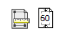
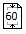

MoneyWorks Manual
Changing the Margins and Leading

The margins of a printout are the space around the edge of the paper upon which no printing will be done. The amount of margin required differs between printers. It is usually not possible to have no margin.
The leading in a report is the amount of blank space between the printed lines. MoneyWorks allows you to change the leading to make reports easier to read.
To change the margins:
- Click on the Margin Setup button
The Margins window will be displayed.

This shows the current margin settings in the nominated units, and a picture of the page. The dotted line represents the available print area on the page, and the black line represents the current margin. The margins can be altered by either typing in new values or adjusting the size of the margin rectangle with the mouse.
Typing margin values
- Type in the new values for the margin
The size of the margin rectangle will alter.
The units of measurement are given in the Units pop-up menu, and can be changed. Alternatively you can type the measurement followed by the abbreviation for the measurement—“cm” for centimetres, “pts” for points, “mm” for millimetres and “in” for inches.
MoneyWorks will not allow you to specify margins smaller than the minimum that your printer is capable of.
Dragging the margin rectangle
- Drag one of the handles on the margin rectangle
The readout numbers will change to reflect the new settings.
- Click OK to save the new margin settings
You can also change the page setup from within the margin setting window by clicking the page setup icon.
Setting the Report Leading
Use the Leading pop-up menu to change the white space between the lines on the reports. The higher the value, the more white space between lines on the report, and the more spread out it will appear. Note that, like the Auto-Scale option, this is a global setting for the machine, and applies to all subsequently printed reports from that machine.
Setting the Scaling Factor

Windows: You can specify the enlargement or reduction for the report in the Margins window by typing the appropriate scale factor into the Scale field. This scale factor used for the report will be displayed on the Margin Setup button. Note that you cannot change the scaling for forms (e.g. Cheques, Envelopes and receipts).
Macintosh: Use the Scale field in the Page Setup for the report to set the scaling (see the next section for further details).
Auto-Scale
If this option is on, MoneyWorks will automatically scale the report to fit to the selected page size. Thus it is possible to print a 15 column report in portrait, although the printing will be small. This is set for each machine—turn it off and it is off for every MoneyWorks report printed on that machine. When this option is off, reports that are too wide are unceremoniously truncated.